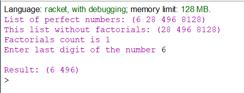
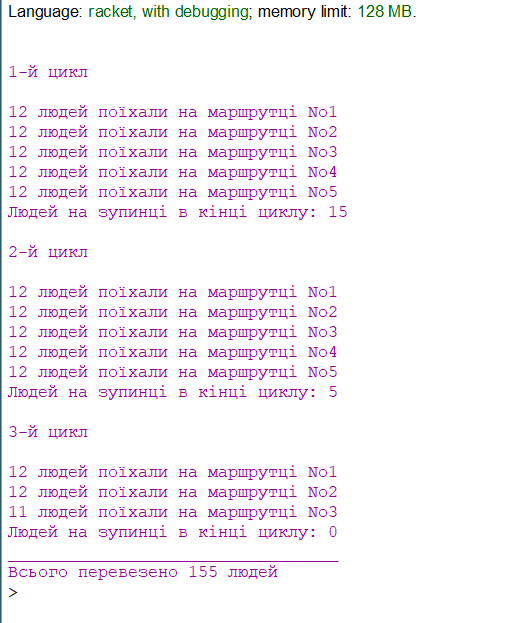

Вибір середовища
Racket — це універсальна багатопарадигмальна мова програмування та мультиплатформенний дистрибутив, який включає мову Racket, компілятор, велику стандартну бібліотеку, IDE, засоби розробки та набір додаткових мов. Мова Racket є сучасним діалектом Lisp і нащадком Scheme. Він створений як платформа для проектування та впровадження мови програмування. На додаток до основної мови Racket, Racket також використовується для позначення сімейства мов програмування та набору інструментів, що підтримують розробку на Racket і з ним. Racket також використовується для створення сценаріїв, навчання інформатиці та досліджень. Racket призначений для розробки програм та мов програмування. Це означає, що з його допомогою можна досліджувати не лише те, як писати програми, а й чому саме так.
Задача 1
Створити список досконалих натуральних чисел, задавши максимальне значення числа (10000). Досконале число – це натуральне число, яке дорівнює сумі всіх своїх дільників. Вивести створений список. Виконати такі операції:
- визначити елементи списку, які є факторіалами чисел, та підрахувати їх кількість;
- видалити елементи списку, які є факторіалом числа;
- знайти елементи, остання цифра яких дорівнює n (задається користувачем).
Код програми
#lang racket
(define (perf n)
(let loop ((i 1)
(sum 0))
(cond ((= i n)
(= sum n))
((= 0 (modulo n i))
(loop (+ i 1) (+ sum i)))
(else
(loop (+ i 1) sum)))))
(define (isfactorial n)
(for ([i (in-naturals 1)])
#:break (not (zero? (modulo n i)))
#:break (zero? n)
(set! n (/ n i)))
(cond ((= n 1)
#true)
(else #false)))
(define c 0)
(define (removed-factorials input-list)
(for/list ([i (in-list input-list)]
#:when (isfactorial i))
(set! c (+ c 1)))
(for/list ([i (in-list input-list)]
#:when (not (isfactorial i)))
i))
(define (last-digits input-list digit)
(for/list ([i (in-list input-list)]
#:when (= (remainder i 10) digit))
i))
(define perfectlist
(for/list ([n (in-range 1 10000)]
#:when (perf n))
n))
(begin (display "List of perfect numbers: ")(display perfectlist))
(begin (display "\nThis list without factorials: ")(display (removed-factorials perfectlist)))
(begin (display "\nFactorials count is ") (display c))
(begin (display "\nEnter last digit of the number ")(define digit (read)))
(begin (display "\nResult: ")(display (last-digits perfectlist digit)))
Результати роботи програми
Спочатку виконання програми, створюється список досконалих натуральних чисел, який згодом використовується для подальших маніпуляцій (знаходження факторіалів, знаходження елементів остання цифра яких дорівнює n).
source file link
Задача 2
Написати код, що моделює процес обслуговування пасажирів маршрутками. Пасажири утворюють список, їх ідентифікація за порядковими номерами. У маршрутку можуть увійти k людей. На маршруті m машин. Машини прибувають на зупинки кожні n хвилин. Черга пасажирів зменшується на k людей, коли прибуває маршрутка, але протягом чекання наступної машини збільшується на p<=k людей. Вивести на екран сценарій обслуговування пасажирів маршрутками. Визначити, скільки людей перевезуть m маршруток за r циклів роботи.
Код програми
#lang racket
(define k 12)
(define p 10)
(define m 5)
(define n 8)
(define r 4)
(define count 25) ;початкова кількість людей на зупинці
(define total 0) ;кількість перевезених людей
(define (run)
(define (inner-2 mt)
(if (and (<= mt m)
(> count 0))
(let ((kt (if (< (+ p count) k) (+ p count) k)))
(set! count (+ (- count kt) p))
(set! total (+ kt total))
(display kt) (display " людей поїхали на маршрутці No") (display mt)
(newline) (inner-2 (+ 1 mt)))
(begin (display "Людей на зупинці в кінці циклу: ") (display count))))
(define (inner-1 rt)
(if (and (<= rt r)
(> count 0))
(begin (newline) (newline) (display rt) (display "-й цикл") (newline) (newline)
(inner-2 1) (inner-1 (+ rt 1)))
(begin (display "\n_________________________________\n")
(display "Всього перевезено ") (display total) (display " людей"))))
(inner-1 1))
(run)
Результати роботи програми
У програмі враховуються всі необхідні показники (кількість пасажирів на зупинці, час чекання на наступну маршрутку і т.д.) для прорахування кінцевого результату.
source file link
Висновок
Після проведеної роботи було реалізовано дві програми з використанням та обробкою списків. Розібрати новий синтаксис виявилось не так складно, як здавалось.